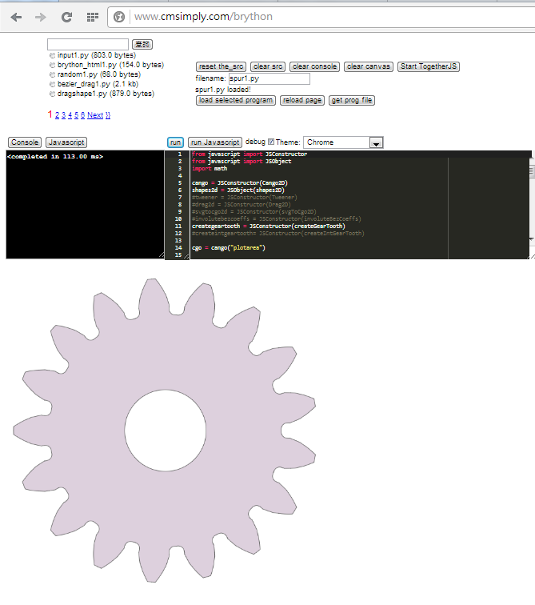

以下為第一週內容
利用 iframe 嵌入投影片:
w1
(一) 課程內容：
1.下載“ Ana3_2015 ”檔案。 (※路徑： 學校電腦 → C槽 → Ana3_2015檔 )
2.登入課程網址，閱讀課程相關文章。 (※課程網址：http://wordpress-2015course.rhcloud.com/ )
3.說明課程內容及綱要。(※針對〝 2015Fall CADPA 第1週 〞文章 )
4.點選文章中的 reveal.js 倉儲： https://github.com/coursemdetw/reveal ( 對應的 github pages: demo, cadpaw1.html )
5.嘗試在近端與遠端上輸出字串 (例： print("hello") )。
方法一：
於近端桌面開啟 "start" ，跳出 jupyter 網頁，輸入密碼(2015cp)進行登入，操作 (輸入 print("hello")，輸出 hello)。
(※操作：jupyter → new → python 3 → print("hello") → cell → run → hello 。 )
方法二：
於近端桌面開啟 "start"，運用 " cmd " 輸出 print("hello") 。
方法三：
於近端桌面開啟 "start"，運用 " SciTE " 輸出 print("hello") 。
(PS：由此可知，一個答案有多種解法。)
6.建立個人 Github 課程倉儲 ，並命名為 2015cadp。
7.學習如何於近端 (cmd) 創建 " Github " 的分支(gh-pages)，再推送至遠端 (Github) 。
8.輸入 "192.168.1.35:8000 "，下載資料。
(※cmd → python -m http.server)
(二) 任務內容與成果： (※作業)
1.內容：
(1)建立個人 Github 課程倉儲 。(※名稱為 2015cadp)
(2)使用 Git 在 Github 建立分支。
(3)使用 SciTE 新增網頁，並利用 git 推送至 Github。
2.成果：
網址：http://40323107.github.io/2015cadpw1/2015cp_hw_w1.html (※暫定)
(三) 心得與自評：
1.心得： 這週作業是懂非懂，雖然有上課筆記與教學影片提供參考，
但實際操作還是有問題，例如：可創建倉儲，卻無法顯示網頁(指〝.html〞)，經過查證後，
並非操作流程錯誤，而是倉儲認證未通過，結論，只要認證通過就能成功，經過這次的體驗，
真的讓我印象深刻，也從中吸收到新的知識，更讓我領悟出一些道理呢！
2.自評： 90 分 。
3.理由： 整體而言，能夠掌握，只是有些許疑問，但不影響。
4.啟發： 失敗為成功之母
(四) 補充說明：
(1) git 指令與涵義
1.使用者認證。
→ git config --global user.name "40323107" (使用者姓名) → git config --global user.email 40323107@gm.nfu.edu.tw (使用者信箱) → git config -l (驗證身分)
2.下載倉儲。
→ git clone 網址 (複製你需要的倉儲網址)
3.進入倉儲。
→ cd 檔名 (倉儲的名稱)
4.將想要快照的內容寫入暫存區。
→ git add . 或 git add -A
5.實際儲存快照又稱為提交。
→ git commit -m "檔名" (檔名可為提交的內容簡敘)
6.退出倉儲。
→ cd ..
7.檢查分支。
→ git branch
8.創建分支。
→ git branch gh-pages
9.切換分支。
→ git checkout gh-pages
10.內部命令，顯示某個磁碟指定目錄下的全部或部分檔案目錄和子目錄。
→ dir
11.將資料指定〝推〞送至遠端的分支。
→ git push origin gh-pages
12.將指定資料〝拉〞至近端。
→ git pull origin gh-pages
(2)操作流程簡敘：
start → cmd → 使用者認證 → 下載倉儲 → 進入倉儲 → 檢查、建立、切換分支 → dir
→ SciTE - index.html → 暫存 → 提交 → 推送至分支 → 完成。
(五)其他資料：
1.課程網址： http://wordpress-2015course.rhcloud.com/
2.本週課程內容網址： http://wordpress-2015course.rhcloud.com/?p=3637
3.課程教學影片網址：https://vimeo.com/user24079973/videos
4.Sci TE 的內容： google
放入圖檔, 可以直接利用 html 的 img 標註:

Vimeo 影片嵌入(直接從 Vimeo 影片上的 Share 複製 html 碼):
Welcome Speech from 虎尾科大機械設計工程系 KMOL on Vimeo.